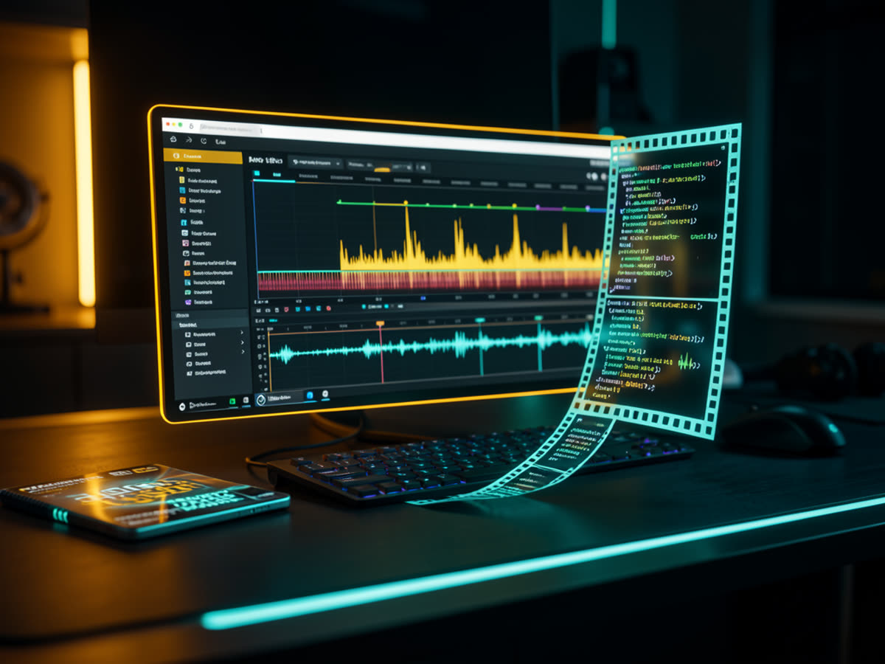

It transcribes, cuts silences and mistakes, plans the scenes and builds motion graphics in animated HTML. You describe what you want in plain language, and the agent checks its own work before delivering.

Fifteen skills mirrored for Codex and Claude Code, 406 motion graphics cards in two styles, two scene templates, validators and a starter that runs without an API key.
Removes silences, stutters, false starts and retakes with word-level timing. Every proposed cut is reviewed in context before it is applied.
Cards with CSS tokens and text slots, anchored to the exact phrase being spoken. A validator checks that each element comes in the moment you talk about it.
Full editing of lessons, reels and 9:16 Shorts, plus 15-second brand showreels cut to the timing of the music.
This is the reasoning behind the kit. Each step has a skill or a script. The details are in docs/METODO.md (in Portuguese).
Word-level timing: it is what makes each graphic come in at the right moment and lets the agent understand the story. ElevenLabs Scribe or local Whisper.
Dead air and mistakes go before any design, with cut-silences and then cut-mistakes. Useful even if you will finish in your own editor.
"When I say X, show Y." The clearer the agreement, the closer you get to what you want. video-storytelling and hyperframes-video-beats.
Anything you repeat becomes a skill. After each round, say what you liked and what you didn't, and ask for the skill to be updated.
The agent renders, extracts frames, looks, fixes and only delivers after a few passes. You get version 5, not version 1.
Liked a video? Measure it with analyze-reference.mjs, ask for an analysis of why it works and turn it into a skill. That is how motion-showreel was born.
Describe the result and even the emotion the video should create. The agent adds ideas of its own; review them as you would with an editor. All the recipes are in docs/PROMPTS.md (in Portuguese).
Each element tied to a phrase, with a position and a glass card for readability.
When I mention [A] and [B], show [A] where I
point on the left and [B] on the right, with
animated logos and a glass card behind. When I
say "[thesis]", show the words below,
highlighted. Check the render before delivering.The agent fetches the material: records the screen, takes screenshots, uses real images and generates whatever is missing.
When I talk about B-roll, screenshots or image
generation, do it for real: record the screen,
take the screenshot, generate the image, and show
it on the sides with a background that keeps it readable.Hand-drawn whiteboard; course style with a circular camera crop and large bullet points; or a dynamic short with B-roll.
Edit [recording] as a lesson. The camera starts
full screen and then sits in a circular crop.
Minimalist background, a few large bullet points
and simple AI-generated images.A folder of event recordings becomes a reel with the quotes that show the audience's energy.
Look at everything in [folder], transcribe the talks
and build a [duration] sizzle telling the story of
the event. Show me the quote selection first.Real catalog images, photos generated from them and short videos of those photos, timed to the music.
Make a [duration] video for [product] with
real catalog images. Where motion is missing,
generate a photo and video (Kling via my subscription).
Confirm before spending credits.The motion-showreel skill: a motif that transforms into chapters, a HUD, cuts on the timing grid and a logo lockup.
Use motion-showreel for a 15 s showreel
of [brand]. Measure the timing grid, map the
chapters to brand objects and show me the
storyboard before building.Node.js 22+, Git, FFmpeg with ffprobe and Chrome or Chromium. The starter and the tests need no paid key.
Make sure they are on your terminal's PATH.
# versions node -v # 22 or later ffmpeg -version ffprobe -version
Codex (desktop app or CLI) or Claude Code. The skills are discovered automatically when you open the folder. For full edits, use high effort.
# Claude Code, inside the folder claude # Codex: New project → Local → kit folder
Transcription: ElevenLabs Scribe or local Whisper. Generated video: your Kling subscription via the kling CLI; Kie.ai only as a paid alternative.
# .env at the root ELEVENLABS_API_KEY=your-key # Kling: no key, OAuth login kling login
The commands below are the ones from the repository. In Codex use $skill; in Claude Code, /skill.
Clone it, install the pinned dependencies (HyperFrames 0.7.109 and GSAP 3.14.2), check the tools and run the tests.
git clone https://github.com/inematds/hyperframes-student-kit.git cd hyperframes-student-kit npm ci npm run setup # checks node, ffmpeg, chrome and creates the .env npm test # tests without an API key
Creates a project with the synthetic composition, opens the Studio for scrubbing and renders an eight-second MP4.
npm run demo cd video-projects/demo npx hyperframes lint npx hyperframes preview # Studio on localhost; Ctrl+C to exit npx hyperframes render --quality draft --output renders/demo.mp4
In ElevenLabs: Developers → API keys → create a key restricted to speech_to_text and paste it into the .env. If you prefer local Whisper, tell the assistant and it will set it up.
# transcription with word-level timing, next to the video node scripts/transcribe-elevenlabs.mjs video-projects/meu-video/assets/raw.mp4
Create the project, put the recording in assets/raw.mp4 and say what appears at each line. The more specific you are, the closer it gets to what you imagine.
npm run new-video -- meu-video # in the assistant: Use edit-video on video-projects/meu-video/assets/raw.mp4. Cut pauses and mistakes and show me the mistake cuts. When I say "[phrase]", show [element] on the right with a glass card behind it. Dark graph-paper style. Verify before delivering.
Silences first, then the mistake review using the already-cut video and the retimed transcript. Never mix original timings with the edited video.
node .claude/skills/cut-silences/scripts/cut-silences.mjs assets/raw.json --video assets/raw.mp4 --out-dir assets --output assets/silenced.mp4 --apply node .claude/skills/cut-mistakes/scripts/find-cut-candidates.mjs assets/raw.silence-transcript.json --out-dir assets # review, write approved-cuts.json, then: node .claude/skills/cut-mistakes/scripts/apply-cuts.mjs assets/raw.silence-transcript.json --cuts assets/approved-cuts.json --video assets/silenced.mp4 --out-dir assets --output assets/clean.mp4 --apply
The short-form flow plans hook and payoff, exact captions and B-roll, and has plan and footage validators.
Use short-form-edit to turn video-projects/meu-reel/assets/raw.mp4 into a 9:16 reel. A genuine hook, precise captions, purposeful B-roll and sound design. Prepare a draft. npm run validate:short-form -- video-projects/meu-reel npm run validate:footage -- video-projects/meu-reel
Measure the music's timing grid (your own or free music), generate the frame sheet and let the skill assemble the chapters. The audio scripts are local, FFmpeg only.
node .claude/skills/motion-showreel/scripts/music-grid.mjs assets/audio/musica.mp3 --bpm 128 --beats node .claude/skills/motion-showreel/scripts/beatgrid.mjs --period 0.4644 --length 15 --chapters "01 Physics:4, 02 Type:8, Flurry:4, 07 End:rest" node .claude/skills/motion-showreel/scripts/mix.mjs --bed music-bed.wav --events events.json --out master.wav
Run preflight and lint, review in the Studio, render the draft and watch it. Give concrete feedback. When you like a result, or someone else's video, ask for it to become a skill and sync the Codex mirror.
node scripts/preflight.mjs video-projects/meu-video node scripts/validate-beat-sync.mjs video-projects/meu-video node .claude/skills/motion-showreel/scripts/analyze-reference.mjs referencia.mp4 qa/ref --fps 6 --bpm 128 npm run sync:skills # after editing .claude/skills/
Framing and concept references. The presenter photos in the repository are simulated; bring your own recording for the exercises.
docs/.The kit brings together the editing pipeline, the skills from the original and the method from the tutorial. The next steps are examples and styles in Portuguese.
docs/METODO.md and docs/PROMPTS.md.